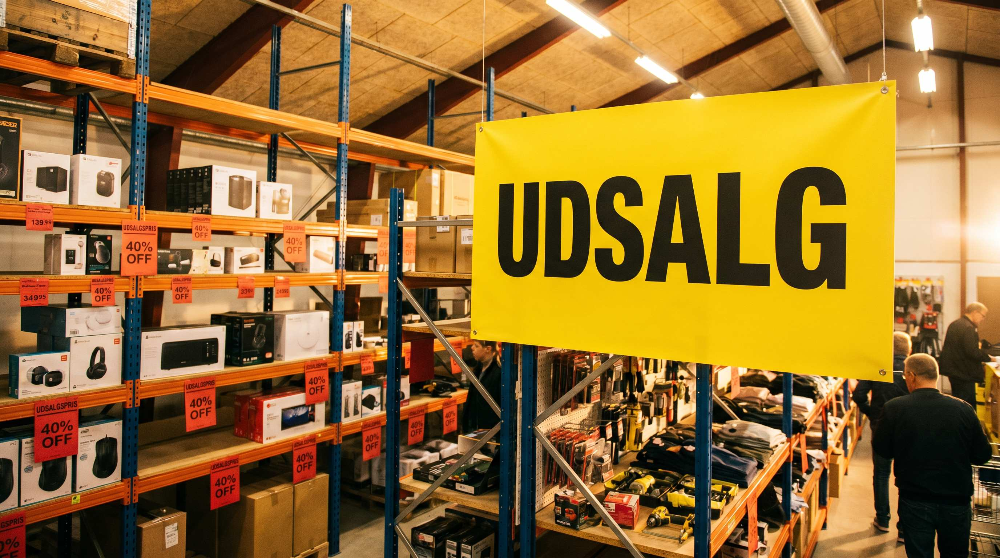

Et udsalg foeles godt. Du får varer ud af lageret, du genererer omsætning, og kunder er tilfredse med tilbudspriserne. Men det er ikke altid en god forretning.
Problemet er at mange webshops sætter priser ned uden at beregne hvad varen faktisk koster dem at have liggende og at saelge. Resultatet er at de i praksis betaler for at slippe af med varen.
Her er hvad du skal beregne, hvilke varer der egner sig, og hvornår et udsalg faktisk er en god investering.
👉 SmartPack viser dig hvilke varer der har ligget stoevsamlende i 60, 90 og 120 dage. Se lagerstatus i realtid
Bundprisgransen: hvad koster det at saelge?
Foer du sætter en udsalgspris, skal du kende bundprisgransen. Det er den minimumspris der stadig dækker dine direkte omkostninger.
Bundprisgransen = indkøbspris + lageromkostning for perioden varen har ligget + haandteringsomkostning (plukning, pakning, fragt)
Eksempel: En vare du købte for 80 kr., der har ligget på lager i 4 maaneder (lageromkostning: 12 kr.) og koster 25 kr. at plukke og sende, har en bundprisgrænse på 117 kr. Saelger du den for 99 kr., taber du 18 kr. pr. stk.
Det kan stadig være en rigtig beslutning. Men det skal være en bevidst en.
Hvornår er det okay at saelge med tab?
Der er situationer hvor det giver mening at saelge under bundprisgransen:
- Varen er udgåt og kan ikke returneres til leverandoer. Alternativet er kassation, som koster fuld lageromkostning plus bortskaeffelse.
- Sæsonvaren er usolgt og har lav vaerdi næste sæson. En vinter-vare solgt til halv pris nu er bedre end samme vare til kvart pris om 8 maaneder.
- Lagerpladsen er mere vaerdifuld end varen. Hvis du har brug for pladsen til nye produkter med højere avance, er det en god trade-off.
Hvad du ikke maa gøre
Undgå disse fejl ved lagerrydning:
- Rabat på hele sortimentet. Det lærer kunderne at vente på udsalg og underminerer din normale prissætning.
- Udsalg uden en slutdato. Et udsalg der aldrig slutter er blot en prisnedsættelse. Det skader din prisprofil permanent.
- For dyb rabat for hurtigt. Prover en moderat rabat (20-30%) først. Mange varer saelger fint med lav rabat.
SÃ¥dan finder du de rigtige varer i SmartPack
SmartPack viser dig en rapport over varer sorteret efter dage-paa-lager. Du kan filtrere på varer der har ligget i 60, 90 eller 120 dage, og du kan se den akkumulerede lageromkostning pr. vare. Det giver dig et solidt grundlag for at beslutte hvilke varer der skal med i næste lagerrydning, og til hvilken pris.